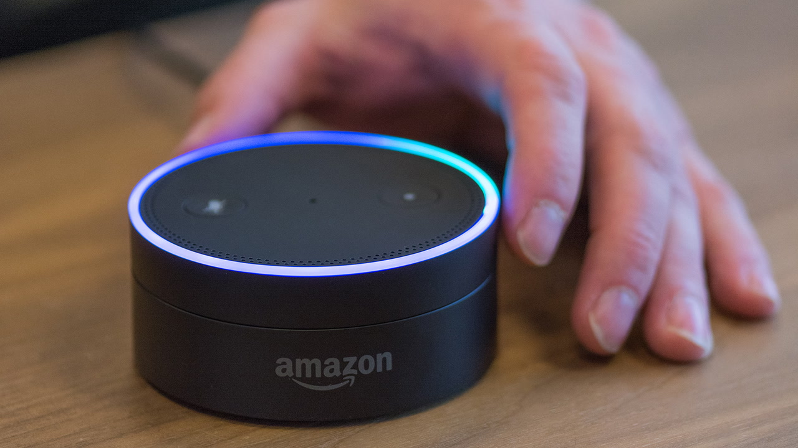
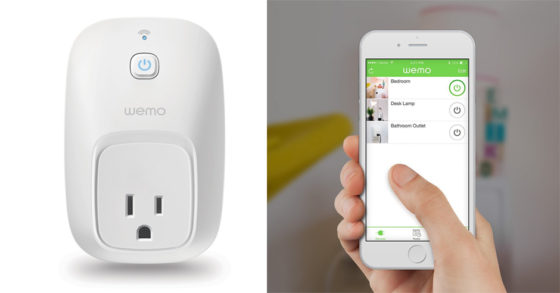

Just tap and ask for music from Amazon Music, Spotify, Pandora, iHeartRadio, and TuneIn
Uses the Alexa Voice Service when connected to Wi-Fi or a mobile hotspot to play music, read the news, provide weather reports, and even order a pizza
NEW—Enable hands-free mode to control music and more from a distance
Amazon Tap is a portable Bluetooth and Wi-Fi enabled speaker that gives you rich, full-range sound. Just tap the microphone button or enable hands-free mode to ask for music, hear news, search for information, order a pizza, and more with the Alexa Voice Service.
Amazon Echo Dot

Amazon Echo Dot
Features
Echo Dot (2nd Generation) is a hands-free, voice-controlled device that uses Alexa to play music, control smart home devices, provide information, read the news, set alarms, and more
Connects to speakers or headphones through Bluetooth or 3.5 mm stereo cable to play music from Amazon Music, Spotify, Pandora, iHeartRadio, and TuneIn
Always getting smarter and adding new features, plus thousands of skills like Uber, Domino's, and more
Echo Dot is a hands-free, voice-controlled device with a small built-in speaker—it can also connect to your speakers or headphones over Bluetooth or through a 3.5 mm audio cable to deliver stereo sound to the speakers you choose. Dot connects to the Alexa Voice Service to play music, provide information, news, sports scores, weather, and more—instantly.
WeMo Switch Smart Plug

WeMo Smart Plug
Features
Works with Amazon Alexa for voice control (Alexa device sold separately)
Wemo is home automation the easy way: Plug in a Wemo Switch, download the free app, and start controlling your lights and appliances from anywhere in the world, right from your phone. No hub or subscription required.
The Wemo Switch protects your home better than a mechanical timer. In “Away Mode”, your lights will turn on and off randomly to confuse potential intruders and make it look like somebody is home.
The Belkin Wi-Fi enabled Wemo Switch lets you turn electronic devices on or off from anywhere. The Wemo Switch uses your existing home Wi-Fi network to provide wireless control of TVs, lamps, stereos, heaters, fans and more. Simply download the free Wemo App from the Google Play Store or the Apple App store, plug the switch into an outlet in your home, and plug any device into the switch. You'll be able to turn that device on or off using your smartphone or tablet (running Android 4.1 and later or iOS 8 or higher). You can set schedules for your devices and control them remotely using a mobile internet connection. You can also add additional switches to your home to control more devices.